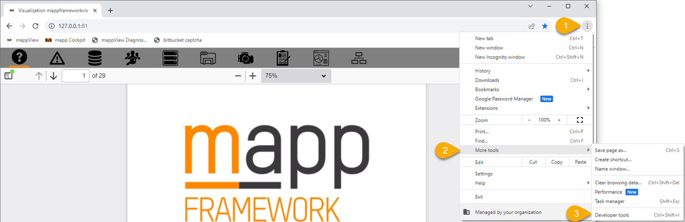
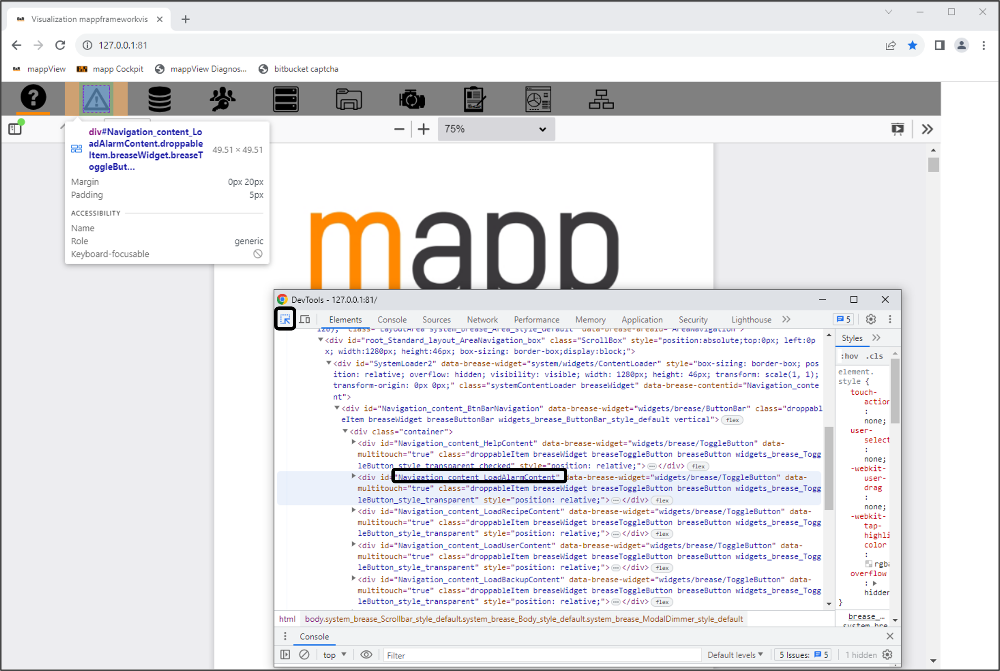

Integration Testing
pytest and Selenium are the tools we typically use at B&R for mapp View integration testing.
- pytest: Python testing suite
- Selenium: driver interface for web browsers. Allows you to interact with the Chrome browser.
Integration Testing Workflow
The overall workflow is as follows:
- Place all of your test files (test_*.py or *_test.py) within one directory of your project repository
- Call pytest in your Jenkinsfile using the helper function RunMappViewIntegrationTests()
- This helper function allows you to point to another directory that holds your tests, rather than requiring it to be the same directory as your Jenkinsfile
For more details on the Jenkinsfile, refer to the Build Server section of the DevOps Package.
pytest
The pytest framework makes it easy to write small, readable tests, and can scale to support complex functional testing for applications and libraries.
Install pytest with:
pip install pytest
Run pytest with:
pytest
pytest finds all files within your current directory that are named test_*.py or *_test.py (where * can be anything) and runs those tests.
Assert
Unlike B&R unit tests, there is only 1 assert statement in pytest:
assert \<Boolean expression>, “optional failure message”
Example:
def f():
return 3
def test_function():
assert f() == 4, “Value was not 4”
def test_function_2():
my_list = [“apple”, “banana”]
assert “apple” in my_list
Fixtures
A fixture provides a defined, reliable, and consistent context for the tests. This could include an environment (e.g., a database configured with known parameters) or content (such as a dataset).
Fixtures are essentially subroutines that each test case requests, by adding it as a parameter to the test case.
Fixtures define the steps and data that constitute the setup, teardown, and arrange phase of a test. In pytest, they are functions you define that serve this purpose.
Fixtures are defined with the @pytest.fixture decorator on a function
Example:
import pytest
class Fruit:
def __init__(self, name):
self.name = name
def __eq__(self, other):
return self.name == other.name
@pytest.fixture
def my_fruit():
return Fruit("apple")
@pytest.fixture
def fruit_basket(my_fruit):
return [Fruit("banana"), my_fruit]
def test_my_fruit_in_basket(my_fruit, fruit_basket):
assert my_fruit in fruit_basket
Fixtures can have scopes, such as: function, module, class, package, session.
“Yield” inside a fixture stops the function at that point but will resume at that point after the test function runs (Useful for creating a setup and teardown within a single fixture).
Example:
@pytest.fixture(scope="class")
def opcua_setup():
#Setup
opcua_client = Client("opc.tcp://localhost:4840/")
opcua_client.connect()
yield opcua_client
#Teardown
opcua_client.disconnect()
Parameterized Test
pytest enables you to run the same test multiple times with different inputs (i.e., test parameterization).
Do this by using the @pytest.mark.parameterize function decorator.
Example:
@pytest.mark.parametrize("test_input,expected", [("3+5", 8), ("2+4", 6), ("6*9", 42)])
def test_eval(test_input, expected):
assert eval(test_input) == expected
Selenium
Selenium allows you to automate web browsers, primarily for testing purposes.
Install selenium with:
pip install selenium
Basic components:
- Session
- driver = webdriver.Chrome()
- Take action on browser
- driver.get(“http://localhost:81/index.html?visuId=mappFramework”)
- Request browser information
- title = driver.title
- Find an element(s)
- text_box = driver.find_element(by=By.NAME, value="my-text")
- submit_button = driver.find_element(by=By.CSS_SELECTOR, value="button")
- Take action on an element
- text_box.send_keys("Selenium")
- submit_button.click()
- Request element information
- value = message.text
- End the session (close the browser)
- driver.quit()
Find elements using Developer tools in Chrome by pressing F12, or via the “…” menu:


Helper functions: IntegrationTestBase.py
- get_element – returns an element
- wait_for_element – waits for an element to be available
- wait_and_click_element – waits for an element to be available and click the element
- wait_for_init_page – waits for the initial page to load
- load_content – clicks a button that loads a content and waits for the content to be loaded
- set_input – sets an input to a value
- get_value – gets the value of an output
- get_table_column – returns a column from a table
- get_table_row – returns the row of a table, row is identified by a value in a specified column
- select_table_row – clicks a row of a table, row is identified by a value in a specified column
- select_downdown_item – select an item in a dropdown input
- get_open_dialog_id – returns the id of the currently opened dialog
- read_variable – reads a variable via OpcUa
- write_variable – writes a variable via OpcUa
Included fixtures within the DevOps package:
- visu_setup()
- Selenium Chrome Webdriver
- Will be used in every test
- opcua_setup()
- OpcUa client
- Also need to install asyncua and opcua packages (pip install asyncua opcua)
- Will be needed in most tests
- login()
- logs in as a specific user
Example: